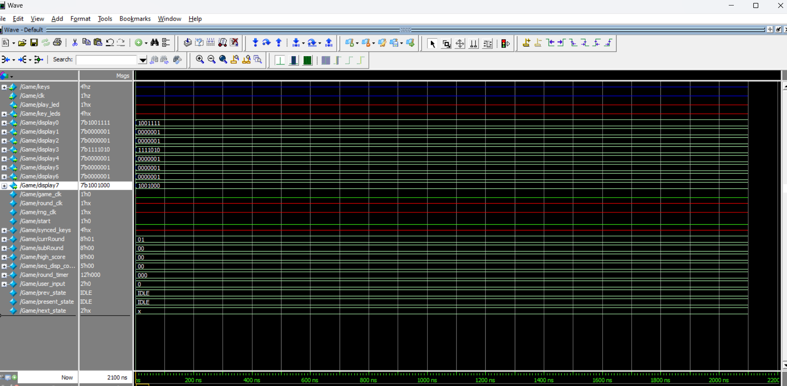

Felix, add your stuff here, I’ll latex it up and make it look pretty
Things for improvement for the lab report:
Better RNG generation (more random in smaller subsets, less sequential)
Store the sequence in memory instead of a 100 element array
use the LCD screen
Project Overview and Objectives:
Overview
The project involves creating a "Simon Says" memory game on a programmable board. This game challenges players to mimic a sequence of LEDs by toggling keys in the correct order. As rounds progress, the sequence becomes longer and more difficult, testing the player’s memory and reaction time. The game integrates a visual (LCD Display) interface to enhance user engagement.
Objectives
- Develop a Memory Game:
- Implement a sequence-based gameplay mechanism where LEDs display an increasing pattern.
- Require players to input the pattern via keys to progress through rounds.
- Increase Challenge Progressively:
- Add a new LED to the sequence in each round, making it more challenging for players to recall and replicate.
- Display Real-Time Information:
- Use a LCD Display to provide critical feedback:
- Current round number.
- High score across games.
- Support High Score Tracking:
- Ensure that high scores persist across game sessions, motivating players to achieve better results over time.
- Test for Scalability:
- Design the game to support up to 100 rounds for testing purposes, even if impractical for real-time play.
Specifications
- Programmable Board: Serves as the central processing unit for the game.
- LEDs: Indicate the sequence for the player to mimic.
- Switches: Allow player input to match the displayed LED pattern.
- LCD Display: Displays round information, feedback, and high scores.
- Sequence length increases by one LED per round.
- Real-time evaluation of player input against the current sequence.
- Immediate feedback for correct or incorrect inputs.
- Low latency between player inputs and system responses.
- Reliable storage for high scores across power cycles.
- State machine to manage game states (idle, sequence display, input evaluation, success, failure).
- Pseudo-random number generator for creating LED sequences.
- Debouncing logic to handle key inputs accurately.
- Intuitive interface using LEDs and keys.
- Clear and responsive feedback on the LCD Display.
This project blends interactive gameplay mechanics with embedded systems design principles, creating a robust and engaging experience for players.
Solution: Approach to Solving the Problem
System Diagram
Design Description:
System Design
- FSM Diagram: The FSM transitions are illustrated below (simplified description):
- IDLE → Display Sequence: Triggered by user input to start the game.
- Display Sequence → Round Play: Once the LED sequence is displayed, the game waits for the player’s response.
- Round Play → Increment Round Count: On correct input, progresses to the next round.
- Round Play → Update High Score: If the player’s score exceeds the high score, the system updates it.
- Any State → IDLE: Game resets upon user-triggered reset.
- State Logic Implementation:
- Each state in the FSM is implemented using a combination of combinational and sequential logic, ensuring accurate and responsive game flow.
*Statemachine Diagram*
Hardware Design
- LED Display:
- LEDs are used to visually display the game sequence that players need to replicate. Each LED corresponds to a switch for user input.
- Key Inputs:
- Keys serve as the primary user interface for entering the sequence. They are debounced to ensure accurate input capture. This replaced the initial concept design of using switches.
- Seven-Segment Display:
- Displays real-time game information, including the current round number and high score. This replaced the initially planned LCD display to ensure reliability and ease of integration.
- Programmable Board:
- Serves as the central processing unit, executing the state machine logic and controlling all hardware components.
- External Clock:
- A clock divider generates game-specific timing signals, ensuring synchronized operation of game states and LED sequences.
Software Design
- Finite State Machine (FSM):
- The FSM governs the game’s behavior, ensuring logical transitions between states. Key states include:
- IDLE: Waits for user input to start the game.
- Display Sequence: Shows the LED sequence to the player.
- Round Play: Monitors and evaluates the player's input.
- Increment Round Count: Updates the round count upon successful input.
- Update High Score: Compares the current score with the high score and updates it if necessary.
- Random Sequence Generator:
- A random number generator (RNG) creates unique sequences for each round, ensuring variability and challenge for players.
- Error Handling:
- Monitors incorrect inputs, transitions the game to a failure state, and resets the current round while preserving the high score.
Testing Procedures:
Seedgenerator testbench:
The Seedgenerator testbench is designed to test the functionality of a module called seedgenerator. Here's a breakdown of its purpose and components:
- Clock Signal Generation:
- A clock signal (clk) is toggled every 10 time units using an always block (#10 clk = ~clk;). This simulates a regular clock input to the seedgenerator module.
- Module Under Test (MUT):
- The seedgenerator module is instantiated with two ports:
- clk: The clock signal generated in the testbench.
- seed (mapped to a): An output signal from the seedgenerator module, expected to provide a generated seed value.
- Simulation Monitoring:
- The $monitor task is used to continuously display the values of the clock (clk) and the generated seed (a) during simulation. This provides real-time insight into how the module responds to the clock input.
- Purpose:
- The testbench evaluates how the seedgenerator module generates or updates the seed (a) in response to the clock signal. By observing the outputs, you can verify whether the module behaves as expected.
This testbench is straightforward, focusing on ensuring that the clock signal and module outputs function correctly in a basic simulation environment.
Sequence testbench:
The testbench for the sequence generation module (sequence_generationS) is designed to verify that the sequence of game states is being generated and stored correctly in the game_sequence array. The module under test, sequence_generationS, is instantiated with a clock (clk) and the output sequence array (game_sequence). The sequence output is stored and logged in a CSV file for analysis.
Clock Generation
The clock signal (clk) toggles every 10 time units (specified by #10), ensuring the testbench runs in synchronization with the module under test. This allows us to simulate a continuous clock driving the sequence generation process.
The sequence generation module outputs a game sequence into the game_sequence array. To test this, we log the values of game_sequence to a file (test_sequences.csv). This provides an easy way to review and analyze the sequence of numbers generated by the module.
File Logging and Count Reset
We use a counter (count) to iterate through the sequence and store the values in a CSV format. When the counter exceeds the array length (in this case, 100), the sequence is reset, and we continue logging the next set of values. This ensures that the generated sequence is thoroughly tested for different game rounds.
Testing Design Approach
- Randomization:
- Randomization was not explicitly used in this testbench, but the sequence generation module (sequence_generationS) likely incorporates randomness internally (e.g., using a random number generator or a pseudo-random sequence). The goal here was not to randomize the testbench input but to verify that the sequence was generated and recorded correctly over multiple iterations.
- Test Cases Covered:
- Full Sequence Generation: We covered a case where 1000 iterations of sequence generation were tested. This is important because it tests the robustness of the system and its ability to handle a large number of rounds (up to 100 rounds of the game).
- File Output Verification: Writing the sequence to a CSV file ensures that we can later review the generated sequences and validate the consistency and correctness of the output.
- Boundary Handling: We included logic to reset the counter when it exceeds the maximum number of sequence slots (100), testing the system's ability to handle boundary conditions and wraparound behavior.
- Why These Cases:
- Full Sequence: Testing 1000 iterations ensures that the system behaves as expected under continuous use, and allows us to verify that each generated sequence is unique, persistent, and correctly logged.
- File Logging: Logging the sequence to a file enables us to inspect the output in a structured way, ensuring that the sequence generation logic is working as intended.
- Edge Case Handling: By testing how the system resets the sequence array after reaching its maximum length (100), we ensure that no out-of-bounds errors or data inconsistencies occur.
Conclusion
In summary, our testbench effectively verified the core functionality of the sequence generation module. We chose a straightforward approach of logging the output to a file and ensuring that the sequence generation was correct across multiple rounds. By focusing on key test cases, such as full sequence generation and boundary conditions, we ensured the robustness of the system while keeping the testbench design simple and efficient.
XORshift testbench:
The xorshift_testbench is designed to test the functionality of the xorshift random number generator (RNG) module. It initializes a 32-bit variable a and uses it as input to the xorshift module, which produces the random output x. The testbench runs a loop for a large number of iterations, incrementing a at each step. The generated output x is written to a text file (xor_test_output.txt) after applying a modulo operation (x % 4) to validate that the RNG produces a uniform distribution. The testbench also uses $monitor to display the values of a and x during simulation. After completing the loop, the file is closed and the simulation halts with $stop. This setup allows for verifying the randomness and distribution characteristics of the xorshift RNG.
Top level testbench:
The Game_tb testbench was designed to thoroughly test the Game module, which simulates a "Simon Says" game where players interact with the system using keys and observe outputs on LEDs and displays. The testbench was structured to cover several different scenarios of key presses to validate the correct operation of the game.
Testbench Design Approach:
- Clock Generation: A clock signal is generated with a period of 10 ns (100 MHz) using the forever construct. This ensures the system operates at a consistent frequency for all test cases.
- Stimulus: A variety of test cases were written to simulate key presses and observe the corresponding outputs. This includes:
- No Key Pressed: The system is initialized with no keys pressed (keys = 4'b0000), testing the default behavior of the game.
- Single Key Pressed: A test case where only one key is pressed (keys = 4'b0001), verifying that individual key presses are correctly recognized.
- Multiple Keys Pressed: Two keys are pressed (keys = 4'b1010), testing the system's ability to handle multiple inputs.
- All Keys Pressed: A case where all keys are pressed (keys = 4'b1111), ensuring the system can process all inputs simultaneously.
Coverage:
- Outputs Monitoring: For each test, the testbench monitors both the LED outputs (play_led and key_leds) and the seven-segment display outputs (display0 to display7). This ensures the visual feedback from the game is correct based on the key inputs.
- Randomization: The testbench does not utilize randomization as the main goal is to cover specific, deterministic key press cases. This approach is appropriate as it allows for a predictable evaluation of the system’s response to particular input scenarios.
- Reset and Stability: The design tests multiple key press scenarios in sequence, ensuring the system’s stability and correctness after each change in input. The system's reaction to different input combinations (none, one, or many keys) is observed, covering normal operating conditions.
Additional Considerations:
- The testbench checks the functionality of both LEDs and displays to ensure all visual indicators work as expected for a range of key inputs.
- The use of the #10 delay between key changes ensures that the system has time to process the inputs and update the outputs, simulating a real-time game environment.
By writing tests that check individual and combined key presses, the testbench provides a comprehensive assessment of the Game module, verifying its ability to respond to expected input patterns and display the correct outputs.
Results:
We were unable to include memory into our project however we were still able to save the current high score of the game. We were also unsuccessful in getting the LCD screen to display any results or feedback as this was a challenging aspect of the final project. We instead resulted in using the Seven Segment display which was much easier as we were running out of time. The game was successful in working however in terms of randomizing the pattern of the game we usually got a consistent pattern due to the RNG only randomizing 4 sequences.
*Compilation Report*

*Top level waveform*
Analysis:
The design operated successfully, meeting its primary objectives with some minor adjustments to the initial concept. The system was user-friendly and capable of supporting up to 100 rounds, though certain limitations were identified. For instance, user data could not be retained if the system was powered off, and there was no reset functionality unless the user lost the game. Despite these constraints, the game effectively randomized patterns on the board. However, the random number generator (RNG) had limited randomness due to the small number of keys used, which resulted in less variation over time.
From a performance perspective, the timing was sufficient for smooth gameplay, with acceptable latency and throughput to support user interactions. Space requirements were minimal, allowing the design to operate efficiently within the hardware constraints.
For future enhancements, we aim to include an LCD screen to improve user interaction and display additional game details. We also plan to implement a more advanced RNG to produce better randomization, particularly within smaller subsets, reducing sequential patterns. Additional features such as sound integration could make the game more immersive and engaging. A potential multiplayer mode would allow one user to create a pattern while the other attempts to replicate it, fostering competition and collaboration. This feature could also have educational benefits, enhancing pattern recognition and memory skills.
Feedback from the poster session highlighted the importance of incorporating these features to improve user experience and broaden the design's applications. These insights will guide our future iterations of the system.
Task Breakdown:
We collaboratively agreed on the initial concept of designing a "Simon Says" game and worked together to enhance the project by incorporating unique features to distinguish our work from other groups. Overall, our teamwork was effective, resulting in a functional and presentable final design.
Responsibilities:
- Led the system design, focusing on key functionalities such as the finite state machine (FSM), random number generator (RNG), and sequence generation. Her work ensured the core game logic was functional and scalable.
- Managed the written report, prepared the presentation materials, and worked on integrating the LCD display into the design. However, when the LCD display proved unsuccessful, we adapted the design to utilize a Seven-Segment Display, ensuring the game interface was operational for the final presentation.
Through effective collaboration and division of tasks, we were able to address challenges and present a fully functional design, showcasing our problem-solving and teamwork skills.
Conclusion:
The "Simon Says" game project demonstrated the integration of hardware and software systems to create an engaging and interactive memory-based challenge. We delivered a functional and scalable game by designing a progressively challenging gameplay mechanism, incorporating visual and textual feedback through LEDs and a Seven-Seg Display, and ensuring high-score tracking.
Through this project, we gained hands-on experience in developing state machines, synchronizing hardware inputs, and managing persistence for user data. Additionally, we enhanced our problem-solving and debugging skills while working on real-time systems. This experience reinforced the importance of modular design and rigorous testing in achieving a reliable and user-friendly product. Overall, this project deepened our understanding of embedded systems and their potential for creating interactive applications.